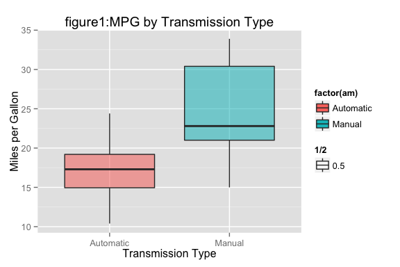
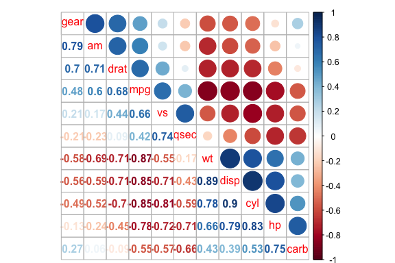
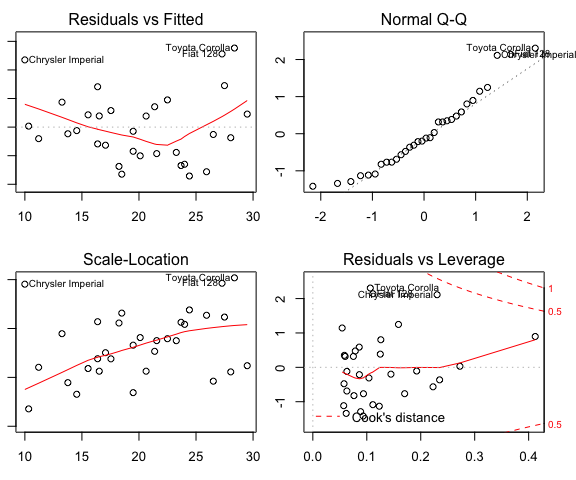
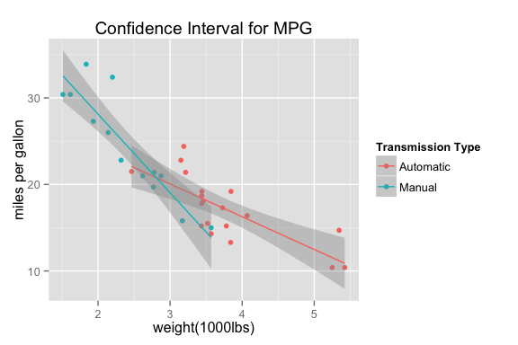

Regression Model Project
This project is maintained by shinezhou9
mtcars from the 1974 Motor Trend US magazine to explore if an automatic or manual transmission have different impact on miles per gallon (MPG), and How much is the difference.mpg. The data was extracted from the 1974 Motor Trend US magazine, and comprises fuel consumption and 10 aspects of automobile design and performance for 32 automobiles (1973–74 models).
mpg Miles/(US) gallon cyl Number of cylinders disp Displacement (cu.in.) hp Gross horsepower drat Rear axle ratio wt Weight (lb/1000)qsec 1/4 mile time vs V/S am Transmission (0 = automatic, 1 = manual)gear Number of forward gears carb Number of carburetorsdata(mtcars)encoded the following variables factor variables: am, vs
mtcars1 <- transform(mtcars, am = as.factor(am), vs = as.factor(vs))
levels(mtcars1$am) <- c("Automatic", "Manual")library(ggplot2)
p <- ggplot(mtcars1, aes(factor(am), mpg))
p <- p + geom_boxplot(aes(fill = factor(am), alpha = 1/2))
p <- p + labs(title = "figure1:MPG by Transmission Type")
p + labs(x = "Transmission Type", y = "Miles per Gallon")
Here, We considered only one variable am to explore mpg
The boxplot shows that there is a difference in the MPG by transmission type. Manual transmission seems to have more miles per gallon than automatic transmission. Let's do a simple Liner Regression model here.
To begin our model testing, we fit a simple linear regression for mpg with only one regressor am.
Null hypothesis: There is no difference in the mean MPG for automatic and manual transmission
fit <- lm(mpg~am, data = mtcars1)
sm <- summary(fit)
intercept <- sm$coef[1]
slope <- sm$coef[2]
sigma <- sm$sigma
rsquared <- sm$r.squared
p_value <- sm$coef[2,4]
sm$coef## Estimate Std. Error t value Pr(>|t|)
## (Intercept) 17.147 1.125 15.247 1.134e-15
## amManual 7.245 1.764 4.106 2.850e-04
Interpretting Coefficient
To choose the appropriate covariates for the regression model, we did covariate adjustment and multiple models to prob the effects. Before that, let's look at the corrlation for mpg variable of our dataset mtcars
library(corrplot)
M <- cor(mtcars)
corrplot.mixed(M, order = "AOE")
In addition to am (which must be included in our regression model to campare the two types of transmission ), we see that wt, cyl, disp, and hp are highly correlated with our dependent variable mpg. As such, they may be good candidates to include in our model. However, after we look at the correlation matrix, we see that cyl is highly correlated with hp. and disp is highly correlated with wt, and they are both corrlated with each other. Since predictors should not exhibit collinearity, we may should not have cyl and disp in in our model. Let's explore deeper!
Null Hyphothesis: all of the three linear regression models are the same.
fit1 <- lm(mpg ~ am , data = mtcars1)
fit3 <- update(fit1, mpg ~ am + wt + hp)
fit5 <- update(fit1, mpg ~ am + wt + hp + cyl + disp)
var_table <- anova(fit1, fit3, fit5)
var_table## Analysis of Variance Table
##
## Model 1: mpg ~ am
## Model 2: mpg ~ am + wt + hp
## Model 3: mpg ~ am + wt + hp + cyl + disp
## Res.Df RSS Df Sum of Sq F Pr(>F)
## 1 30 721
## 2 28 180 2 541 43.08 5.6e-09 ***
## 3 26 163 2 17 1.37 0.27
## ---
## Signif. codes: 0 '***' 0.001 '**' 0.01 '*' 0.05 '.' 0.1 ' ' 1
With p-value 5.5763 × 10-9, we reject the null hypothesis and claim that our multivariate model is significantly different from our simple model. And with p-value 0.2722, we accept the null hypothesis that our fit5 model is the same as the fit4 model. Therefore, we will include wt and hp in our regression equation, which makes sense intuitively, since heavier cars and cars with horsepower should have lower MPGs.
Therefore, our multivariate model is model 2: lm(mpg ~ am + wt + am*wt + hp, data = mtcars1) which has three regressors am,wd and hp for mpg.
Null hypothesis: There is no difference in the mean MPG for automatic and manual transmission
fitbest <- lm(mpg ~ am + wt + hp, data = mtcars1)
par(mfrow = c(2,2), mar = c(3,1,2,2))
plot(fitbest)
Diagnostic plots show the residuals are normally distributed and homoskedastic. We can now summarize our model
fitbest <- lm(mpg ~ am + wt + hp, data = mtcars1)
smbest <- summary(fitbest)
intercept1 <- smbest$coef[1]
slope1 <- smbest$coef[2]
sigma1 <- smbest$sigma
rsquared1 <- smbest$r.squared
p_value1 <- smbest$coef[2,4]
smbest$coef## Estimate Std. Error t value Pr(>|t|)
## (Intercept) 34.00288 2.642659 12.867 2.824e-13
## amManual 2.08371 1.376420 1.514 1.413e-01
## wt -2.87858 0.904971 -3.181 3.574e-03
## hp -0.03748 0.009605 -3.902 5.464e-04
h <- ggplot(mtcars1, aes(wt, mpg, colour = factor(am)))
h + geom_point() + stat_smooth(method = lm) + labs(x = "weight(1000lbs)", y = "miles per gallon", title = "Confidence Interval for MPG") + scale_colour_discrete(name = "Transmission Type")
Interpretting Coefficient
wt and mpg equal to 0, and the Slope 2.0837 is the increased miles per gallon for manual transmision. wt and hp did indeed confound the relationship between am and mpg